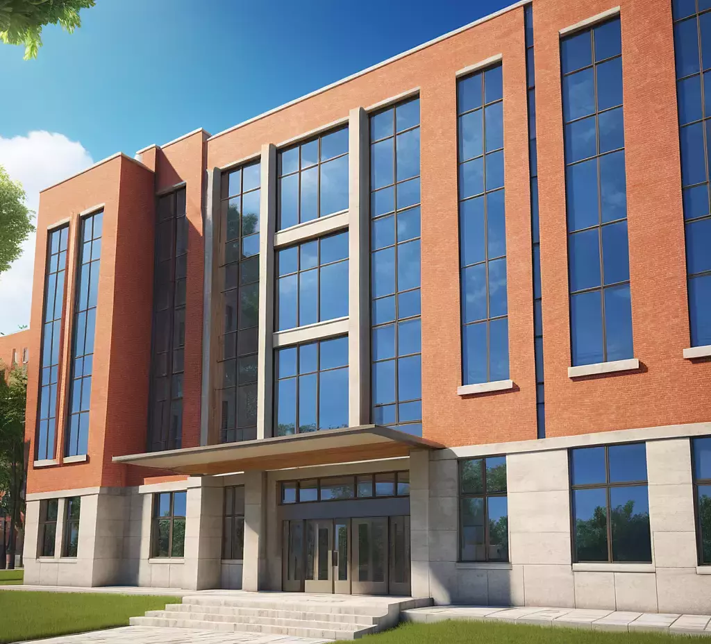
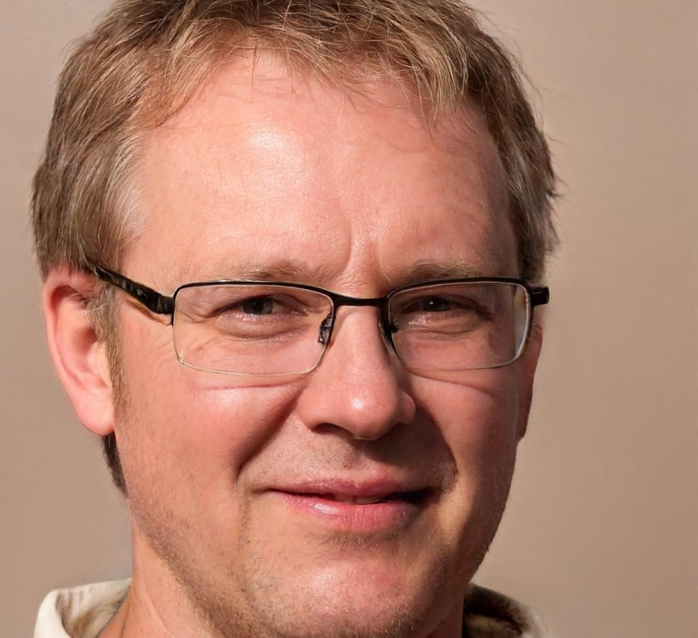
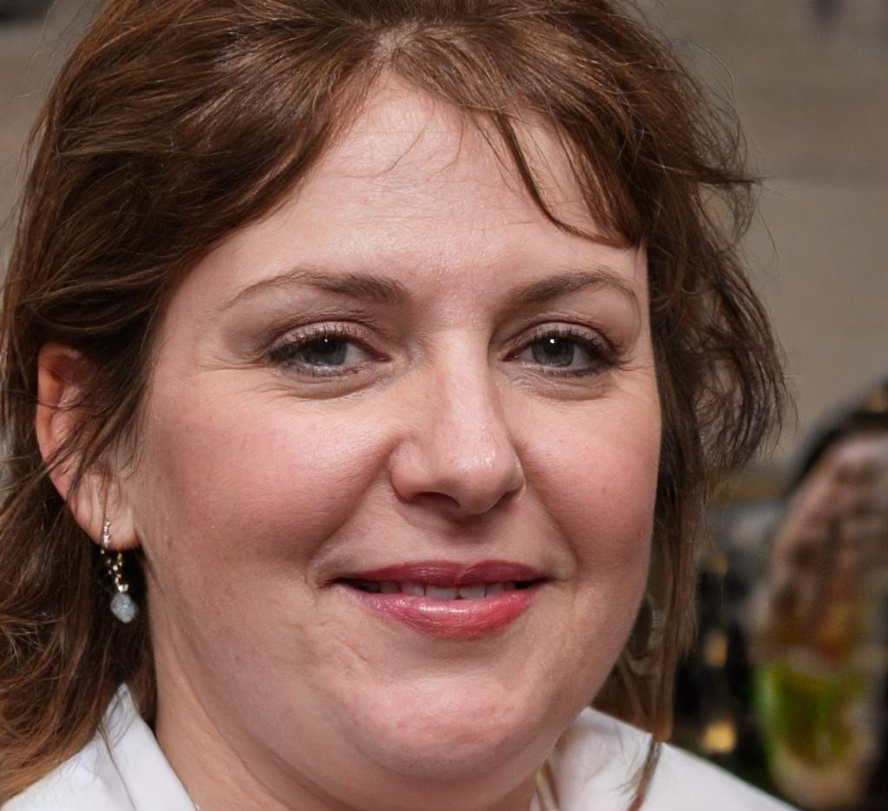
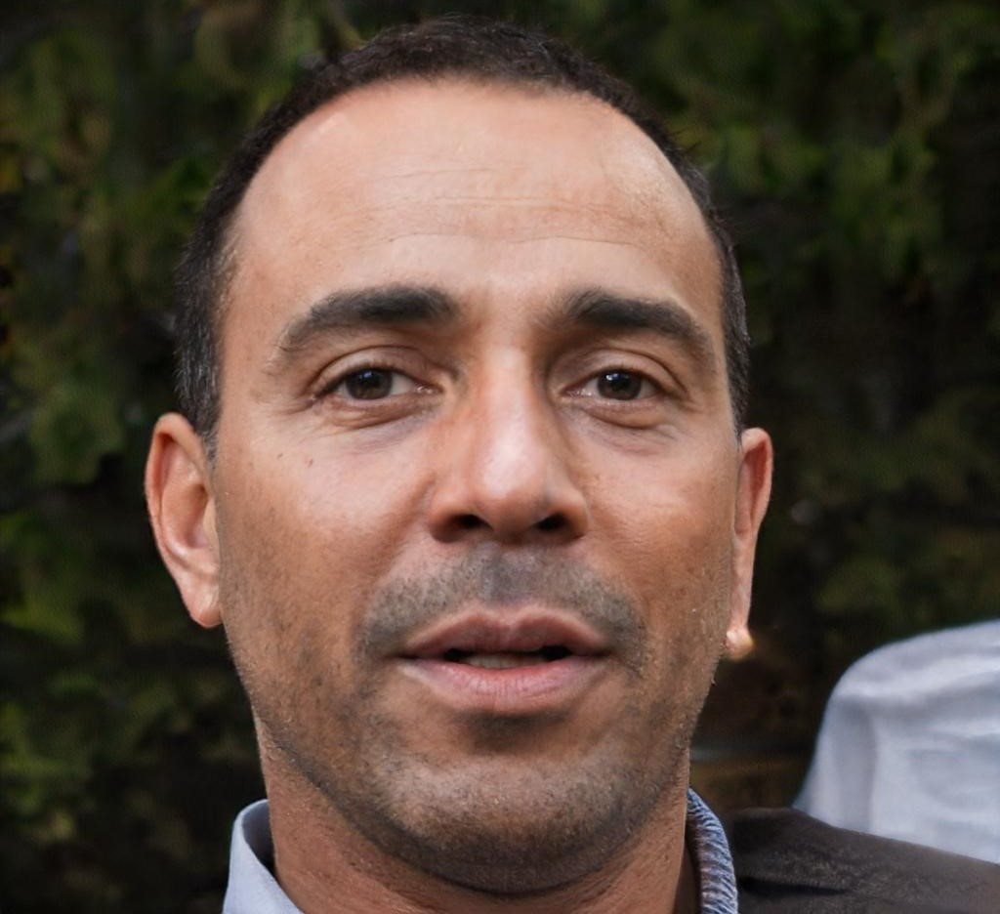
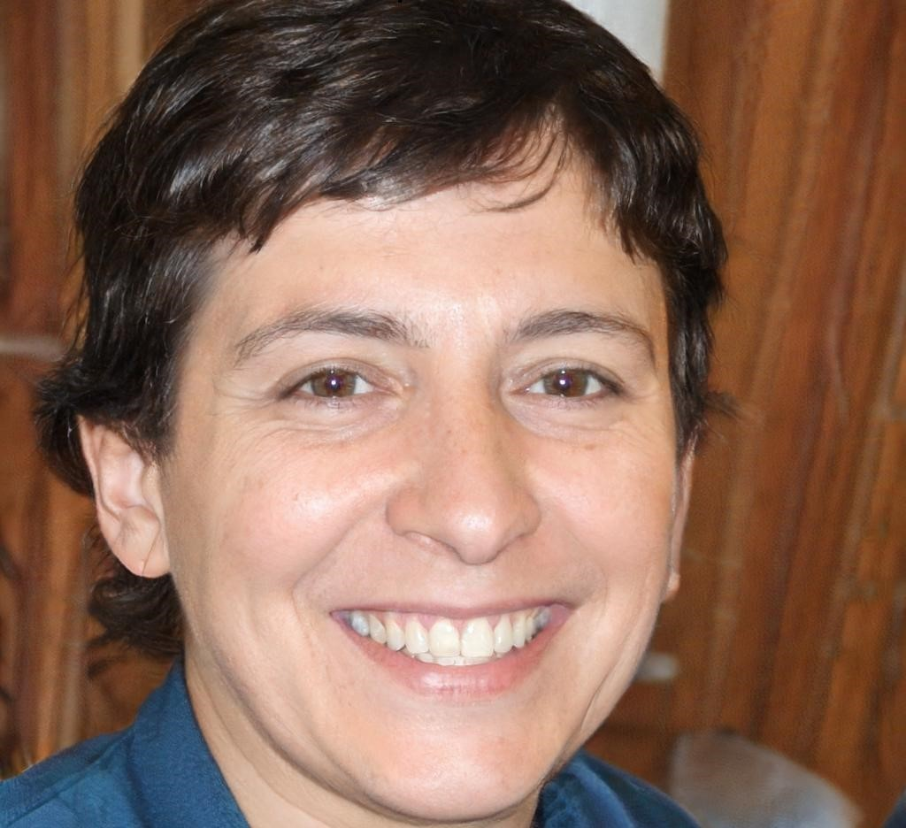
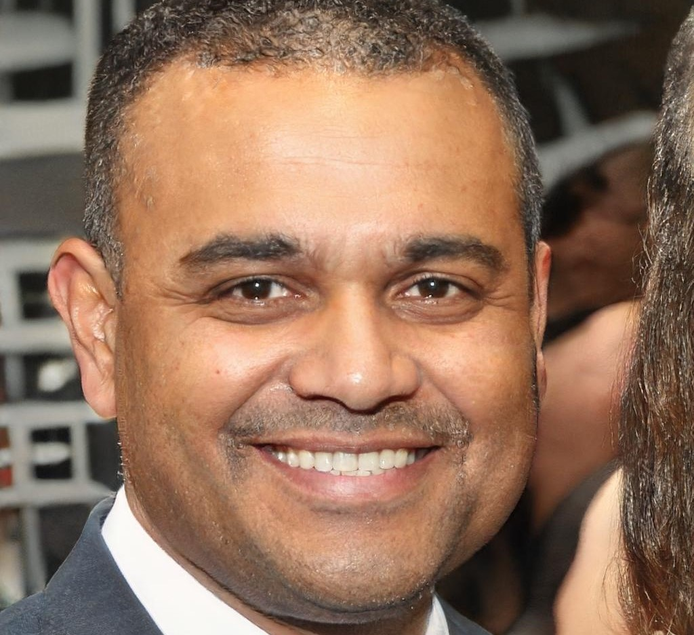

Nuestra Escuela
Oferta académica
Primario
Nuestra escuela ofrece una educación común, laica e integral, ponderando valores sociales, para desarrollar las capacidades de nuestros niños en diversas áreas, y fortalecer los vínculos con sus familias y el entorno.
Modalidad
Jornada simple
Horarios
Turno mañana
Lunes a viernes de 8:00 hs a 12:15 hs
Turno tarde
Lunes a viernes de 13:15 hs a 17:30 hs
Idiomas
Turno mañana
Frances o Italiano
Turno tarde
Inglés
Secundario
Nuestra escuela, con una visión de futuro, ofrece a nuestros adolescentes una educación integral, actualizada y variada, para prepararlos y brindarles las herramientas, para el mundo por venir.
Plan de estudios
Bachillerato con orientación biológica
Modalidad
Jornada completa
Horarios
Discontinuo: Lunes a viernes de 7:30 hs a 12:00 hs y de 13:00 a 16:35
Institucional
Autoridades
Director General
León Nuñez: nacido el 10 de abril de 1970, profesor de biología y biólogo, director general de nuestra escuela desde el año 2020.
Vicedirectora
Helena Romero: nacida el 3 de marzo de 1978, profesora de geografía y psicóloga, vicedirectora de nuestra escuela desde el año 2020.
Secretario
Pedro Otero: nacido el 5 de julio de 1976, profesor de contabilidad y contador, secretario de nuestra escuela desde el año 2018.
Directora de Primaria
Lurdes Díaz: nacida el 10 de diciembre de 1980, profesora de ciencia sociales y psicopedagoga, directora de primaria de nuestra escuela desde el año 2022.
Director de Secundaria
Felipe Hernández: nacido el 23 de septiembre de 1979, profesor de matemática e ingeniero en sistemas, director de secundaria de nuestra escuela desde el año 2018.
Psicopedagoga
Luz Martínez: nacida el 17 de enero de 1991, psicopedagoga de nuestra escuela desde el año 2017.
Psicopedagogo
Jorge Sato: nacido el 6 de agosto de 1993, psicopedagogo de nuestra escuela desde el año 2018.
Breve historia de nuestra escuela
Todo comenzó en el año 1920, en la Ciudad de Quilmes, cuando 3 hermanos, los hermanos Rodríguez (Figura 1), se proponen cumplir con su gran sueño: construir una escuela, para honrar la memoria de su padre, el profesor Jorge Rodriguez (Figura 2).
Llevaria 10 años plasmar ese sueño, y en el año 1930, se inaugura el primer edificio de nuestra escuela (Figura 3). Edificio imponente desde el comienzo, con gran capacidad para educar niños y adolescentes.
Y aquel primer edificio estaria en pie durante mas de 40 años. En el año 1975, se inaugura, en la cuadra de enfrente y luego de 7 años de construcción, el segundo edificio (Figura 4), adaptandose a los nuevos tiempos y requerimientos educativos. El primer edificio fue demolido y el terreno convertido en un parque.
Finalmente, en el año 2011, se pone en funcionamiento el tercer y actual edificio (foto al inicio de esta página ), ubicado a la vuelta del segundo, con una estructura mas cercana a la de una universidad, y equipada con las mas modernas instalaciones. El terreno del segundo edificio, se convirtió en un complejo deportivo, anexo a la escuela.